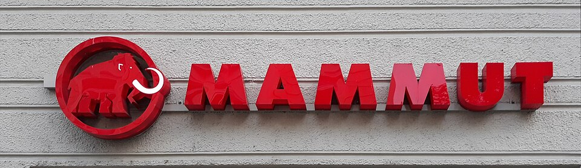

마무트 스포츠 그룹 Mammut
마무트 스포츠 그룹(Mammut)은 스위스의 등반, 설상 스포츠, 트레일 러닝, 트레킹 등 산악 스포츠용 의류와 장비를 제조하는 업체이다. 1862년 밧줄 제조업체로 설립되었다.
최종 업데이트

마무트 스포츠 그룹은 어떤 브랜드인가
마무트 스포츠 그룹은 스위스의 산악 스포츠용 의류와 장비 제조업체이다. 등반, 설상 스포츠, 트레일 러닝, 트레킹 분야의 제품을 만든다.
회사는 제온에 본사를 두고 있으며, 유럽의 중앙 유통 창고는 바이에른의 볼페르츠슈벤덴에 있다. 약 800명의 직원을 고용하고 있고, 자회사와 유통업체, 대리점을 통해 40개 이상의 국가에서 활동한다.
2021년부터 런던 기반의 투자 회사 텔레모스 캐피탈의 자회사이다. 2008년 한델스자이퉁의 보고서에서는 '히든 챔피언'에 속하는 것으로 분류되었다.
마무트 스포츠 그룹은 어떻게 시작되고 성장했나
이 회사는 1862년 카스파르 타너가 스위스 딘티콘 마을에 밧줄 공장으로 설립했으며, 1878년 인근 렌츠부르크로 이전했다. 1898년 카스파르의 아들 오스카가 회사를 물려받았고, 회사는 제1차 세계 대전 동안 크게 성장했다.
1943년부터 제품이 마무트(Mammut) 브랜드로 판매되었으며, 매머드가 회사 로고로 도입되었다. 1968년 헤벌라인 그룹이 인수했고 1982년 콘체타에 매각되었으며, 콘체타는 1984년 아로바 마무트 AG로 이름을 바꾸고 1992년 제온으로 본사를 이전했다.
이후 1970년대와 1980년대에 걸쳐 점차 아웃도어 의류 제조업체로 발전했고, 첫 아웃도어 컬렉션은 1981년에 출시되었다.
마무트 스포츠 그룹의 브랜드 아이덴티티는 무엇인가
1862년 밧줄 공장에서 출발해 산악 스포츠용 의류와 장비 브랜드로 발전한 스위스 기업이며, 매머드를 로고로 사용한다.
마무트 스포츠 그룹의 대표 제품과 서비스는 무엇인가
마무트 브랜드는 아웃도어 의류, 배낭, 침낭, 등반 로프, 클라이밍 하네스를 생산한다. 등반 장비와 액세서리는 매출의 약 3분의 1을 차지한다.
아이거 익스트림 컬렉션은 익스트림 등반의 조건에 맞춰 설계되었으며 전문 운동선수들과의 협업으로 개발되었다. 배리복스 브랜드로 눈사태 비컨도 제공하며, 2011년에는 눈사태 에어백 제조업체 스노우펄스를 인수했다.
여러 제품이 2023년과 2024년 ISPO 어워드를 수상했다.
마무트 스포츠 그룹은 지금 어떤 상태인가
2019년 12월 콘체타는 핵심 사업인 판금 가공에 집중하기 위해 마무트 스포츠 그룹을 매각할 의사를 밝혔고, 2021년 4월 런던 기반의 투자 회사 텔레모스 캐피탈에 매각된다고 발표되었다. 매각 완료는 2021년 6월 30일에 발표되었다.
2023년에는 중국과 일본에 이어 대한민국으로 사업을 확대했고, 2025년 1월에는 트레일 하우스 세일즈 & 마케팅 그룹 및 레드스톤 웨스트와 파트너십을 맺어 미국 서부 지역으로 판매 네트워크를 넓혔다.
마무트 스포츠 그룹 로고는 어떻게 변해왔나
자주 묻는 질문
마무트 스포츠 그룹는 어느 나라 브랜드인가요?
마무트 스포츠 그룹는 스위스의 스포츠·아웃도어 브랜드입니다.
마무트 스포츠 그룹는 언제 설립되었나요?
마무트 스포츠 그룹는 1862년 설립되었습니다.
마무트 스포츠 그룹의 브랜드 아이덴티티는 무엇인가요?
1862년 밧줄 공장에서 출발해 산악 스포츠용 의류와 장비 브랜드로 발전한 스위스 기업이며, 매머드를 로고로 사용한다.
마무트 스포츠 그룹의 대표 제품은 무엇인가요?
마무트 브랜드는 아웃도어 의류, 배낭, 침낭, 등반 로프, 클라이밍 하네스를 생산한다.
마무트 스포츠 그룹는 현재 어떤 상태인가요?
2019년 12월 콘체타는 핵심 사업인 판금 가공에 집중하기 위해 마무트 스포츠 그룹을 매각할 의사를 밝혔고, 2021년 4월 런던 기반의 투자 회사 텔레모스 캐피탈에 매각된다고 발표되었다.
마무트 스포츠 그룹의 본사는 어디에 있나요?
마무트 스포츠 그룹의 본사는 Seon에 있습니다(위키데이터 기준).
마무트 스포츠 그룹의 모기업은 어디인가요?
마무트 스포츠 그룹의 모기업은 Conzzeta입니다(위키데이터 기준).
출처와 검증
마무트 스포츠 그룹 관련 참고: 공식 웹사이트 · 위키데이터 Q495318 · 한국어 위키백과 · 영어 위키백과. 브랜드명은 한글과 원어를 함께 표기하되 데이터에 없는 표기는 만들지 않습니다. 기원 국가·설립연도는 검수된 정의문에서 확인된 값을 우선하고, 없을 때만 공식 웹사이트 URL이 일치하는 위키데이터 개체의 값을 씁니다. 위키데이터 값은 2026-11-03 기준입니다.